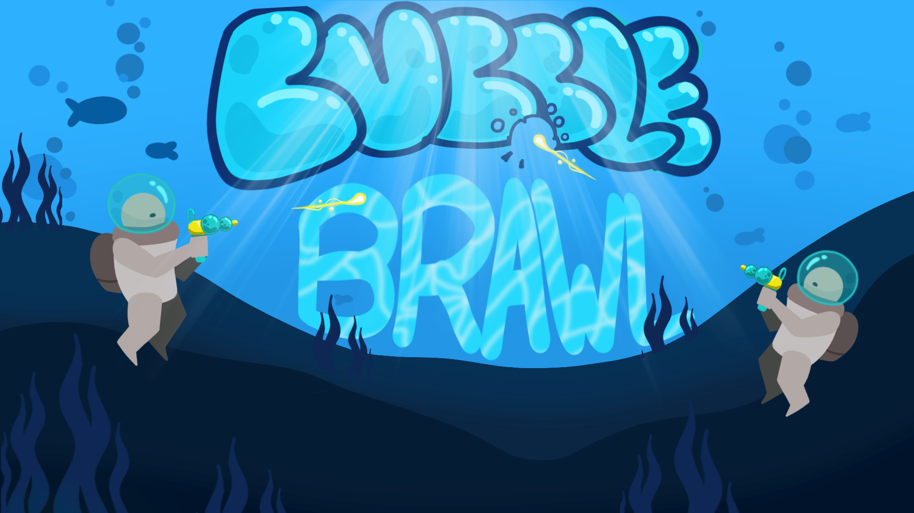
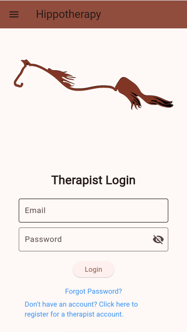
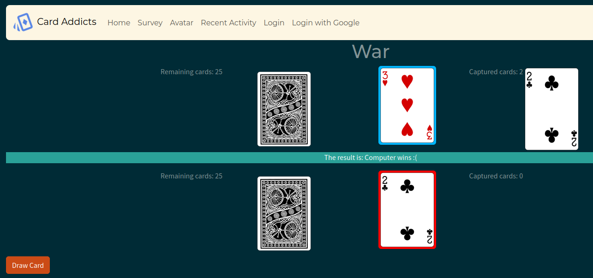
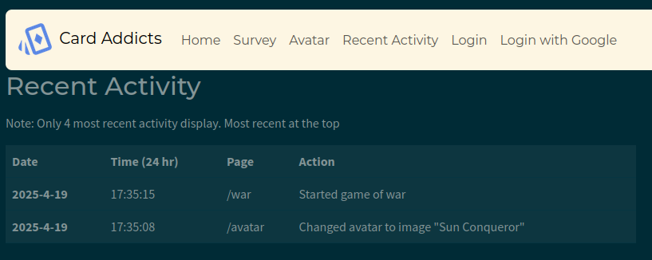
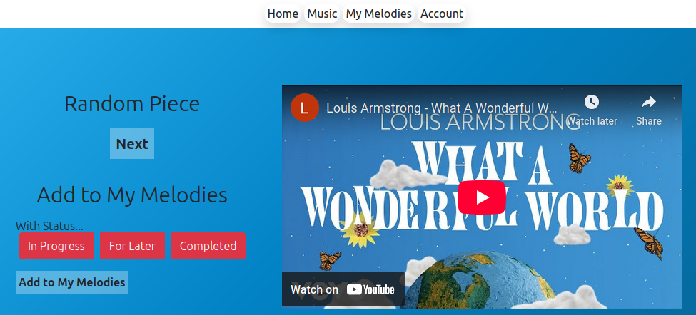
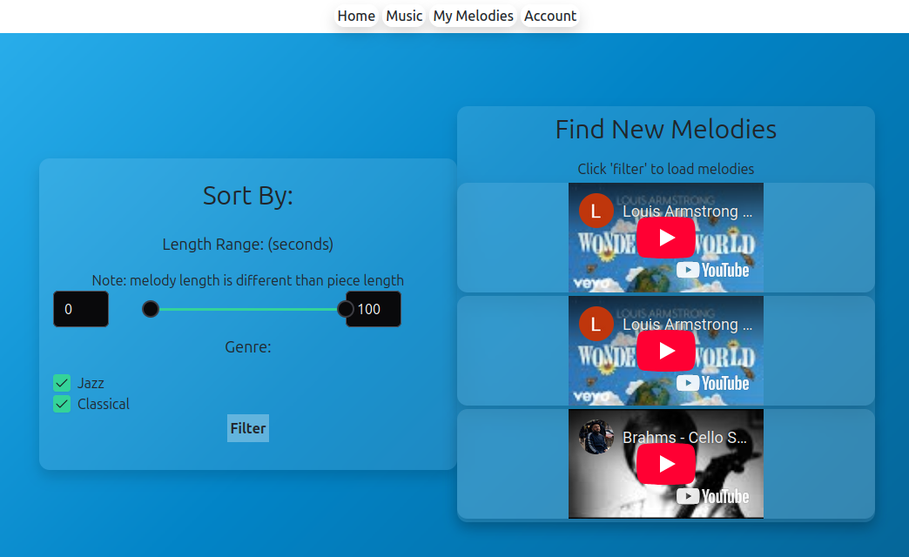

About Me
Hi! 👋
I'm Seth, I like working with computer hardware and coding software. I often re-purpose older computers that might otherwise go unused. I am fascinated by digital security and like to read up on current security related news.
I enjoy programming and have worked on projects ranging from android apps to websites. I enjoy mixing my other hobby of music with programming and creating music related apps.
My Skills
My education at Saskatchewan Polytechnic has provided a wide array of skills. I have direct experience in many programming languages, am familiar the major operating systems, and I have experience with administration tools. All classes where designed to have a focus on practicality like the computer hardware class which aligns with the industry standard COMPTIA A+ Certification.
In the hardware class, I worked with a team of four and we were awarded 'Best in Program' for a research project proposing a large-scale computer system build that involved technical writing and extensive research into recent computer parts and technologies.
I also have a background in performing alongside other professional musicians, leading me to bring a collaborative and proactive approach to working within groups, and being punctual and professional when dealing with clients and associates.
Languages
Scripting
-
Bash
Development Tools & Platforms
Experience
Bubble Brawl
I was part of a game jam in 2025 my team and I made a local multiplayer game in 48 hours!
I worked on the menu interface for the game and collaborated closely with our composer to integrate our music into the game. The main challenge I had to overcome was learning a new language (GD Script). I really enjoyed working out how to make music dynamic with the game and plan to work on more games in the future. 
Hippotherapy App
As part of my schooling we worked with a real industry contact on a seven month project. I was part of a group with six other developers. I worked on a range of features from a graphical data analysis to securing the app with logins. Our app also had an extensive suite of tests to ensure the functionality is maintained between releases.
I learned a lot about working with a team of developers and proper ways to test functionality. One thing I would change would be spending more time researching the technologies to use for the app, as some of what we picked later ended up making some features much more difficult.

Web Projects
For a a web development class we coded websites that used both established and more recent web technologies. The projects were done in pairs and allowed us to practice working closely with a single team member. I coded two major projects with Douglas Riese. The first a project where all the processing is done on the web server named "Card Addicts", and the second a more modern component based programming model.
The class was interesting and I liked learning about both ways of structuring the code. I didn't mind learning the older system since it makes sense that companies won't always be up to date with the latest web technology trends, and want to stick with their working system.
My interest in documentation for our projects lead me to mkdocs a website generator for documentation. I decided to use it for my portfolio site! Its main benefit is the ease of updating it, and I wanted to experiment for use in future projects.
Card Addicts


Music Addicts


Contact Me
-
 LinkedIn
LinkedIn
- Email: sethpalmer@tutamail.com